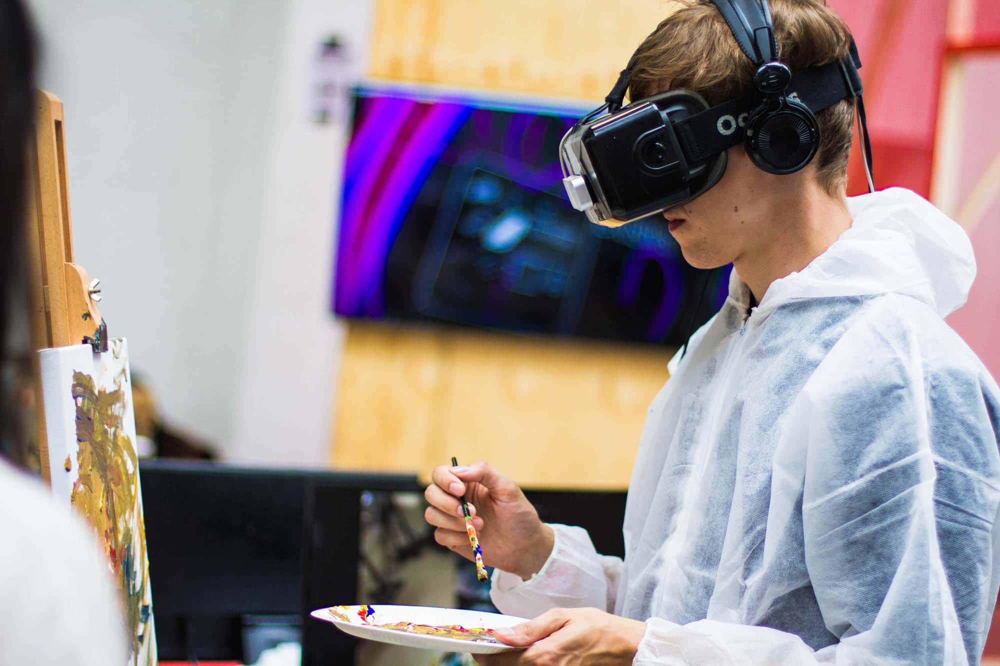

The most fun you can have in under 2 hours. A gift or event venue that
stands out from the rest. The most thrilling STEM field trip ever.
The most technologically advanced body flying tunnels in the world.
Science Museum indoor skydiving is safe and fun for all ages and all kinds of people.
Kids as young as 3, grandparents, athletes and office workers alike can enjoy bodyflight.
You don’t need any special skills to fly—we’ll teach you.

We also have the Young Stars club which meets once a week on a Saturday between 10:00 and 13:00 where you’ll get to explore and experiment with our team of experts.

Young or adult? It doesn't matter here, tech is fun for everyone!
Here you can try everything from the latest VR technology to new Robotics and AI.
The information revolution is here and robotics and artificial intelligence are the science of the future.
From useful home applications of AI to industrial uses of robotics, the future is here.
You can even say hello and shake the hand of Rob the Robot.
From micro-organisms to the human body, major breakthroughs in biology are offering
us unique insights into the great wonders of the tiny world.
For many people their life expectancy is much longer and their
quality of life much improved, thanks to the growth of our understanding of medicine.
Over a series of exhibits we explore the history of medicine and take a look at some
major breakthroughs including the discovery of penicillin and the first heart transplant.
Many of our great medicinal discoveries have come not only from the
lab, but also from observing animals in the wild. Often our fellow creatures have beat us to it.
The entrance is free for all. There are guided tours of the museum that leave every hour. These tours are 70 NOK per person and include a handy printed guide of the museum. If you would like to organise a guided tour for your group of 6 or more people, please contact us to arrange the tour.